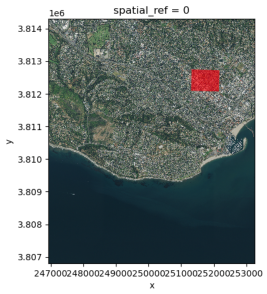

import numpy as np
import geopandas as gpd
import rioxarray as rioxr
import matplotlib.pyplot as plt
from shapely.geometry import Polygon
# used to access STAC catalogs
from pystac_client import Client
# used to sign items from the MPC STAC catalog
import planetary_computer
# ----- other libraries for nice ouputs
from IPython.display import Image22 STAC specification
So far in our course we have accessed data in two ways: by downloading it directly from the data provider or by loading a specific dataset via a URL. This can be a convenient way to access targeted datasets, often usign GUIs (graphical user interfaces) for data discovery and filtering. However, relying on clicking and copy-pasting addresses and file names can make our workflows more error-prone and less reproducible. In particular, satellites around the world produce terabytes of new data daily and manually browsing through data repositories would it make hard to access this data. Moreover, we wouldn’t want to learn a new way to access data from every single big data provider. This is where STAC comes in.

The SpatioTemporal Asset Catalog (STAC) is an emerging open standard for geospatial data that aims to increase the interoperability of geospatial data, particularly satellite imagery. Major satellite imagery datasets like X, Y, and many others, now follow the STAC specification.
In the next classes we’ll be working with the Microsoft’s Planetary Computer (MPC) STAC API. The MPC is both a geospatial coding environment and a STAC data catalogue. In this lesson we will learn about the main components of a STAC catalog and how to search for data using the MPC’s STAC API.
22.1 Item, Collection, and Catalog
The STAC item (or just item) is the building block of a STAC. An item is a GeoJSON feature with additional fields that make it easier to find the item as we look for data across catalogs.
An item holds two types of information:
Metadata: The metadata for a STAC item includes core identifying information (such as id, geometry, bounding box, and date), and additional properties (for example, place of collection).
Assets: Assets are the links to the actual data of the item (for example, links to the spectral bands of a satellite image.)
STAC items can be grouped into STAC collections (or just collections). For example, while a single satellite scene (at a single time and location) would constitue an item, scenes across time and location from the same satellite can be orgnanized in a collection. Finally, multiple collections can be organized into a single STAC catalog.
22.2 API
To request data from a catalog following the STAC standard we use an Application Programming Interface (API). We can think of an API as an intermediary tasked with sending our request for data to the data catalog and getting the response from the catalog back to us. The following is a nice real-life analogy:
The Python package to access APIs for STAC catalogs is pystac_client. Our goal in this lesson is to retrieve NAIP data from the MPC’s data catalog via its STAC API. We’ll be doing this within the MPC’s hub.
22.3 Catalog
First, load the necessary packages:
22.3.1 Access
We use the Client function from the pystac_client package to access the catalog:
# access catalog
catalog = Client.open(
"https://planetarycomputer.microsoft.com/api/stac/v1",
modifier=planetary_computer.sign_inplace,
)The modifier parameter is needed to access the data in the MPC catalog.
22.3.2 Exploration
Let’s check out some of the catalog’s metadata:
# metadata from the catalog
#print('ID:', catalog.id)
print('Title:', catalog.title)
print('Description:', catalog.description)We can access its collections by using the get_collections() method:
catalog.get_collections()Notice the output of get_collections() is a generator. This is a special kind of lazy object in Python over which you can loop over like a list. Unlike a list, the items in a generator do not exist in memory until you explicitely iterate over them or convert them to a list. Let’s try getting the collections from the catalog again:
# get collections and print their names
collections = list(catalog.get_collections())
print('Number of collections:', len(collections))
print("Collections IDs:")
for collection in collections:
print('-', collection.id)22.4 Collection
We can select a single collection for exploration using the get_child() method for the catalog and the collection id as the parameter:
naip_collection = catalog.get_child('naip')
naip_collection22.5 Catalog search
We can narrow the search withing the catalog by specifying a time range, an area of interest, and the collection name. The simplest ways to define the area of interest to look for data in the catalog are:
- a GeoJSON-type dictionary with the coordinates of the bounding box,
- as a list
[xmin, ymin, xmax, ymax]with the coordinate values defining the four corners of the bounding box.
In this lesson we will look for the NAIP scenes over Santa Barbara from 2018 to 2023. We’ll use the GeoJSON method to define the area of interest:
# Temporal range of interest
time_range = "2018-01-01/2023-01-01"
# NCEAS bounding box (as a GeoJSON)
bbox = {
"type": "Polygon",
"coordinates":[
[
[-119.70608227128903, 34.426300194372274],
[-119.70608227128903, 34.42041139020533],
[-119.6967885126002, 34.42041139020533],
[-119.6967885126002, 34.426300194372274],
[-119.70608227128903, 34.426300194372274]
]
],
}
# catalog search
search = catalog.search(
collections=['naip'],
intersects=bbox,
datetime=time_range)
searchTo get the items found in the search (or check if there were any matches in the search) we use the item_collection() method:
items = search.item_collection()
len(items)This output tells us there were two items in the catalog that matched our search!
items22.6 Item
Let’s get the first item in the search:
# get first item in the catalog search
item = items[0]
type(item)Remember the STAC item is the core object in the catalog and. The item does not contain the data itself, but rather metadata about and links to access the actual data (assets). Some of the metadata:
# print item id and properties
print('id:' , item.id)
item.propertiesJust as the item properties, the item assets are given in a dictionary, with each value being an pystac.asset Let’s check the assets in the item:
item.assetsfor key in item.assets.keys():
print(key, '--', item.assets[key].title)Notice each asset has an href, which is a link to the asset object (i.e. the data). For example, we can use the URL for the rendered preview asset to plot it:
# plot rendered preview
Image(url=item.assets['rendered_preview'].href, width=500)22.7 Load data
The raster data in our current item is in the image asset. Again, we access this data via its URL. This time, we open it using rioxr.open_rasterio() directly:
sb = rioxr.open_rasterio(item.assets['image'].href)
sbNotice this raster has four bands. So we cannot use the .plot.imshow() method directly (as this function only works when we have three bands). Thus we need select the bands we want to plot (RGB) before plotting:
# plot raster with correct ration
size = 6 # height in in of plot height
aspect = sb.rio.width / sb.rio.height
# select R,G,B bands and plot
sb.sel(band=[1,2,3]).plot.imshow(size=size, aspect=aspect)22.8 Exercise
Recreate the following image, where the red rectangle shows the bounding box used to do the catalog search. HINT: bbox as it is now is a dictionary. How can you get the vertices list out of it to first create a shapely Polygon?

22.9 References
STAC Documentation:
Microsoft Planetary Computer Documentation - Reading Data from the STAC API